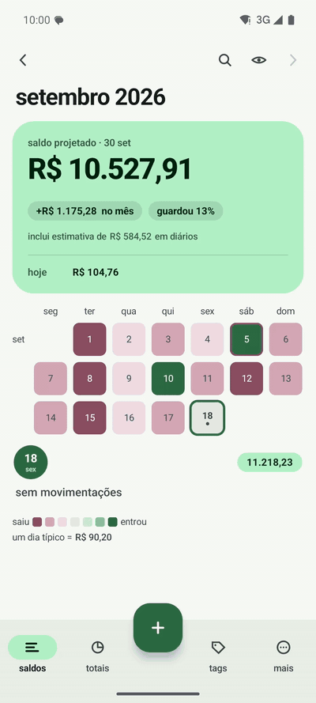
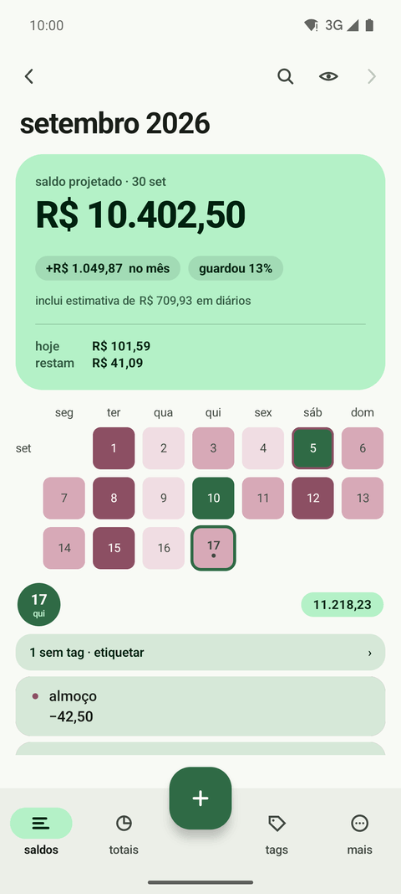
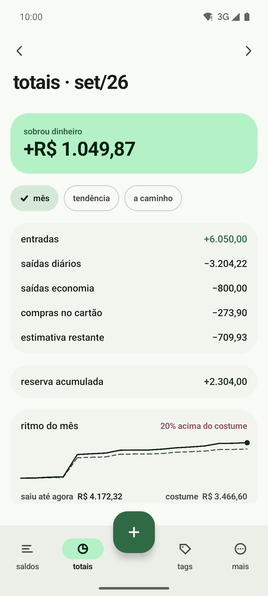
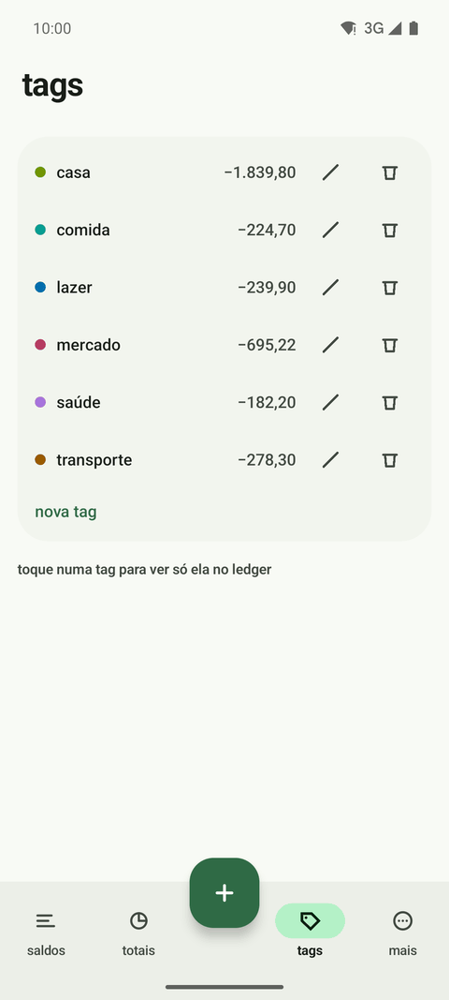
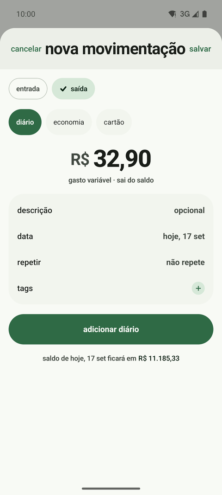
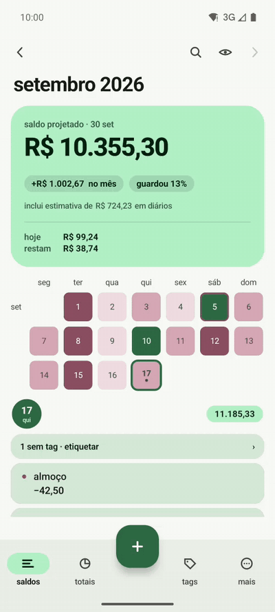

controle de gastos para Android
O app de gastos que você quase não abre.
O banco avisa, o saldo lê o valor e pergunta. Você só confirma. Tudo fica no aparelho.

a história
Todo app de finanças pede a mesma coisa
Sempre tentei me controlar financeiramente com planilhas e com outros apps. Todos eles, pagos ou não, têm o mesmo requisito: eu preciso entrar no app e registrar cada gasto.
Eu esqueço. O registro fica com buracos, e um registro com buracos não diz nada sobre o mês.
Eu queria o mínimo de atrito. De preferência, nem precisar entrar no app.
O banco já manda um aviso a cada compra. Ler esse aviso encaixou no meu caso de uso do começo ao fim: o valor e o estabelecimento chegam sozinhos, e o que sobra para mim é um toque.
Hoje eu só entro no saldo para categorizar as compras e para lançar algum gasto fora do normal. O resto acontece sem mim.
funcionamento básico
Três passos, e o primeiro não é seu
O banco avisa
Você marca em mais → notificações quais apps de banco o saldo pode ler. Vem desligado. Nenhum texto de notificação vai para o disco.
O saldo pergunta
Ele acha o valor e o estabelecimento no aviso e sugere o lançamento. Um toque em lançar e o gasto entra no dia de hoje.
Você categoriza
O gasto vai para a fila do sem tag. Quando der, você dá a categoria. É essa a parte que ainda é sua.




Para o gasto que o banco não avisa
Dinheiro vivo, uma divisão de conta, qualquer coisa fora do normal. O + cobra só o valor, num teclado de uma mão. Descrição, tag e recorrência são opcionais.
Depois, o mês fechando, a tendência dos últimos seis meses e as tags.

na tela inicial
Sete widgets, e você nem precisa abrir o app
Cada um responde uma pergunta só. Nenhum mostra valores em reais: são proporções, cores e formas.
As imagens são as prévias que o seletor de widgets do Android mostra. Os widgets são opcionais e vêm desligados; cada um se ajusta ao tamanho da caixa que você puxar na tela inicial.
o que fica com você
Nada sai do aparelho
Sem conta, sem nuvem, sem rede. O app nem pede permissão de internet.
Notificação não fica
O texto do aviso é lido, vira valor e estabelecimento, e não é gravado.
Seus dados, seu arquivo
Exporte em csv ou json, restaure o json de volta, ou apague tudo.
Backup na sua pasta
Automático, numa pasta que você escolhe. Se ela for sincronizada pelo aparelho, o histórico sobrevive a ele.
baixar
Instale no seu Android
O APK está na versão mais recente do GitHub. O código é aberto.
É um app pessoal, distribuído fora da Play Store: o Android vai pedir para você permitir a instalação de fontes externas. Para ler os avisos do banco, ative o acesso a notificações quando o app pedir.